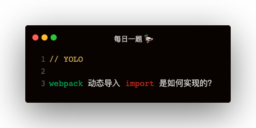

解答
动态导入 import 使用
// index.js
document.getElementById('app').addEventListener('click', () => {
import('./console.js').then(_console => {
_console.log('clicked')
})
})
//console.js
function log (msg) {
console.log(`system log: ${msg}`)
}
export {
log
}
webpack 打包之后的样子
// main.js
{
'./index.js': function (module, __webpack_exports__, __webpack_require__) {
document.getElementById('app').addEventListener('click', () => {
__webpack_require__.e(0).then(
__webpack_require__.bind(null, './console.js')
).then(_console_ => {
_console_.log('clicked')
})
})
}
}
// 0.js
window.webpackJsonp = window.webpackJsonp || []
window.webpackJsonp.push([
[0],
{
'./console.js': function (module, __webpack_exports__, __webpack_require__) {
Object.defineProperty(__webpack_exports__, 'log', {
enumerable: true,
get: function () {
return log
}
})
function log (msg) {
console.log(msg)
}
}
}
])
webpack_require 的实现
(function (modules) {
var installedModules = {};
function __webpack_require__ (moduleId) {
if (installedModules[moduleId]) {
return installedModules[moduleId]
}
var module = installedModules[moduleId] = {
i: moduleId,
l: false,
exports: {}
}
modules[moduleId].call(module, module, module.exports, __webpack_require__)
module.l = true
return module.exports
}
})({
'./index.js': function (){}
})
webpack_require.e的实现
var installedChunks = {}
__webpack_require__.e = function requireEnsuer (chunkId) {
var promises = []
var installedChunkData = installedChunks[chunkId]
if (installedChunkData !== 0) {
if (installedChunkData) {
promises.push(installedChunkData[2])
} else {
var promise = new Promise((resolve, reject) => {
installedChunkData = installedChunks[chunkId] = [resolve, reject]
})
promises.push((installedChunkdata[2] = promise))
var script = document.createElement('script')
script.src = `${chunkId}.js`
document.head.appendChild(script)
}
}
return Promise.all(promises)
}
window.webpackJsonp 是什么？
window.webpackJsonp 是个数组，但是传统 jsonp 应该是调用回调函数，可是打包之后代码为什么是：window.webpackJsonp.push，如何触发回调呢？
var jsonpArray = window.webpackJsonp = window.webpackJsonp || []
var parentJsonpFunction = jsonpArray.push.bind(jsonArray)
jsonpArray.push = webpackJsonpCallback
for (let jsonp of jsonpArray) {
webpackJsonpCallback(jsonp)
}
可以看出 window.webpackJsonp.push，如果在main.js已加载的情况下，其实已经是 webpackJsonpCallback 函数了
webpackJsonpCallback 的实现
function webpackJsonpCallback (data) {
const chunkIds = data[0]
const moreModules = data[1]
vat resolves = []
for (let chunkId of chunkIds) {
resolves.push(installedChunks[chunkId][0])
installedChunks[chunkId] = 0
}
for (let moduleName in moreModules) {
modules[moduleName] = moreModules[moduleName]
}
if (parentJsonpFunction) parentJsonpFunction(data)
while (resolves.length) {
resolves.shift()()
}
}